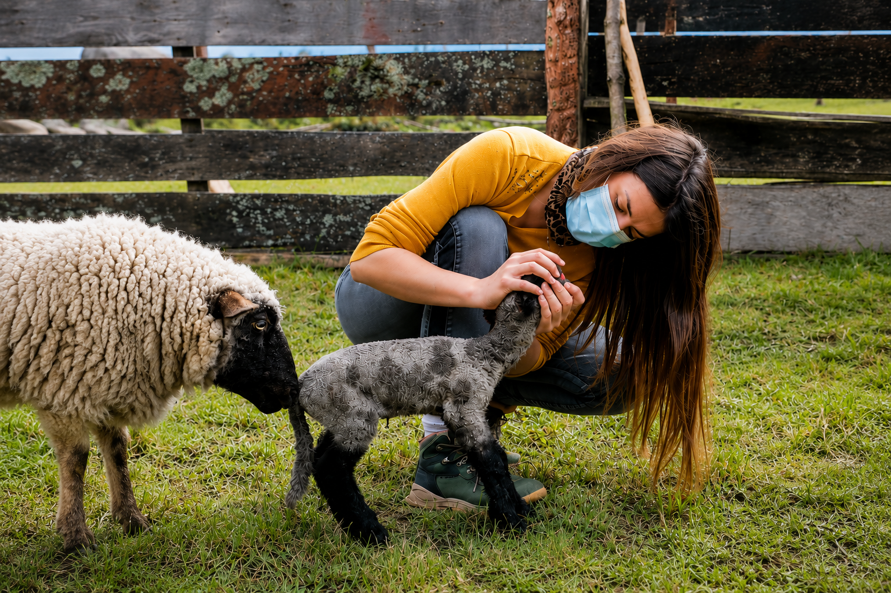
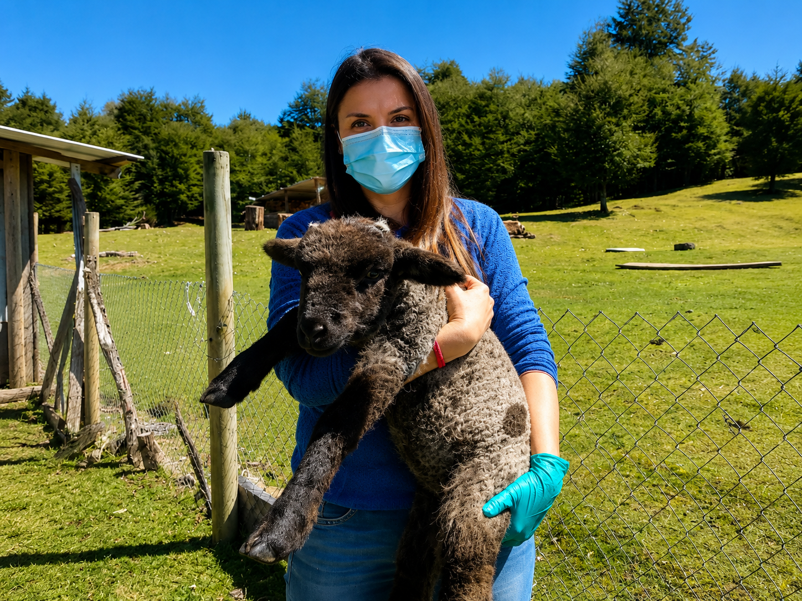

Asesoría Veterinaria Especializada en Ovinos
Ayudamos a productores ovinos de Chile a mejorar la salud, la productividad y el bienestar de sus rebaños mediante asesoría veterinaria profesional.
Todo Chile
Cada predio es diferente
Contacto directo

Nuestros Servicios
Asesoría técnica enfocada en mejorar la productividad y la salud del rebaño.
Sanidad
Diagnóstico, prevención y control de enfermedades.
Reproducción
Programas reproductivos y manejo del rebaño.
Nutrición
Planes de alimentación según la etapa productiva.
Asesoría Online
Consultas mediante WhatsApp y videollamada.

¿Por qué elegir Asesoría Veterinaria Ovina?
Mi objetivo es apoyar a productores ovinos con asesoría veterinaria basada en evidencia, experiencia práctica y un acompañamiento cercano para mejorar la salud y productividad de cada rebaño.
- ✔ Atención personalizada.
- ✔ Enfoque exclusivo en ovinos.
- ✔ Asesoría remota y presencial.
- ✔ Soluciones prácticas para productores.
¿Necesitas ayuda con tu rebaño?
Contáctame por WhatsApp y conversemos sobre la situación de tu predio. Juntos buscaremos la mejor solución para tus animales.
Solicitar asesoría por WhatsAppContacto
+56 9 6333 5214
Correo electrónico
contacto@xxxxxxx
Cobertura
Atención remota para todo Chile y visitas a terreno según disponibilidad.